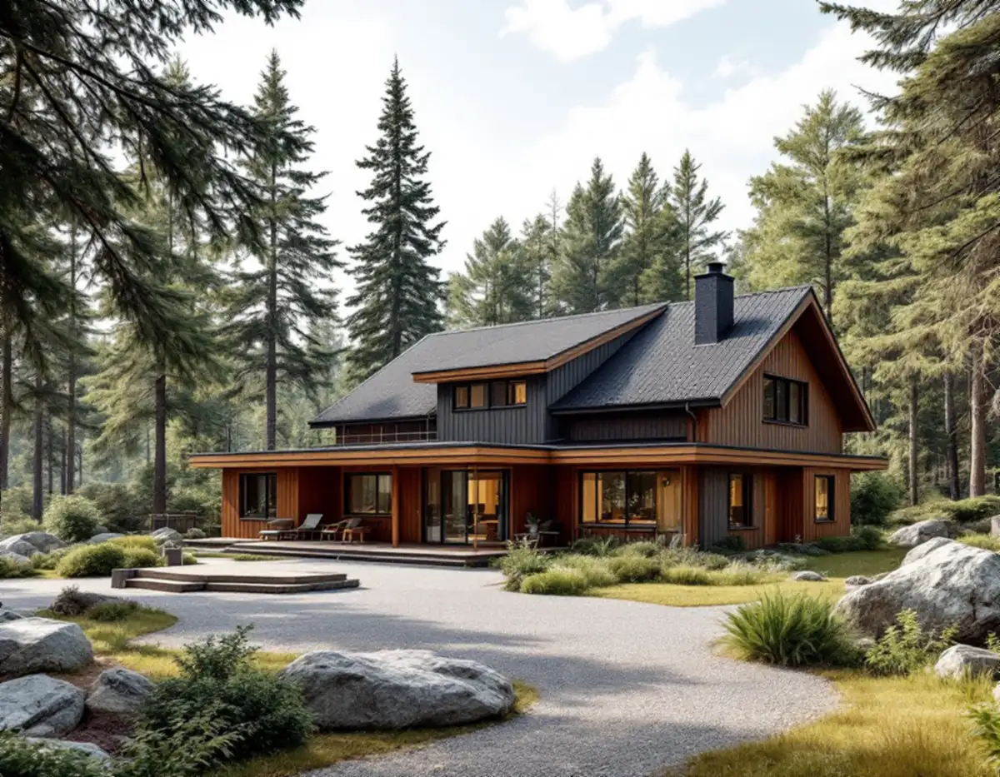
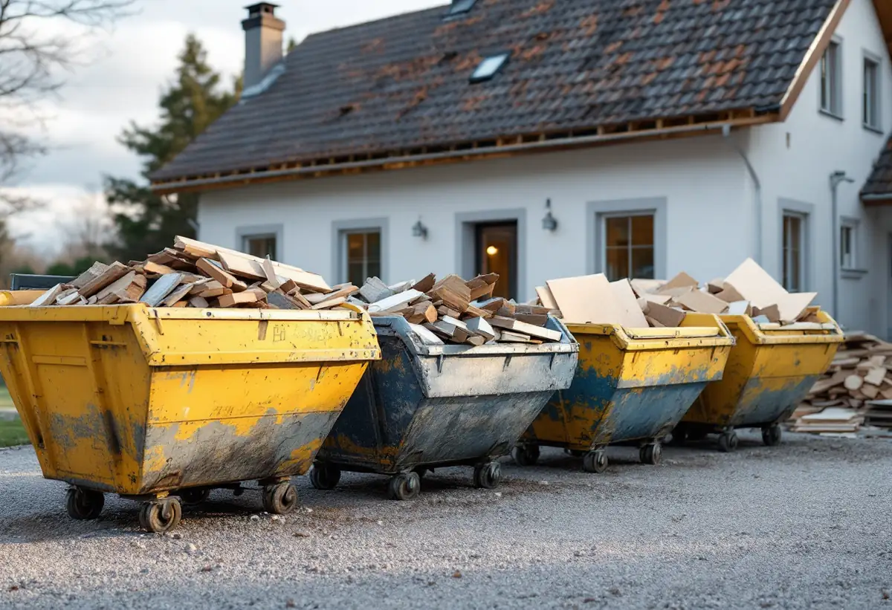
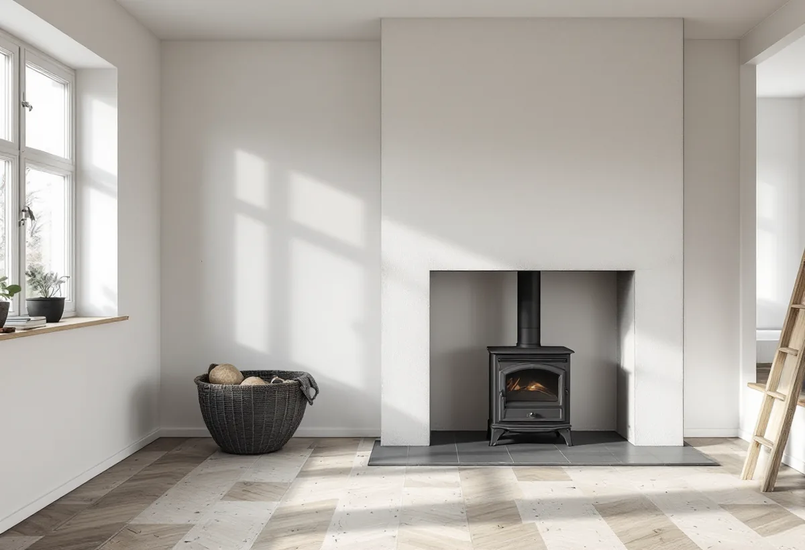

Handlingar
Husets ritningar beställs från bygglovsarkivet och jämförs med huset.
En totalrenovering börjar med rivning, och i Tyresö ska rivningsavfallet sorteras redan på plats. Geal Entreprenad AB totalrenoverar villor och fritidshus i Tyresö och planerar rivningen, ritningarna och eldstaden innan arbetet börjar.

Tyresö kommun skriver att bygg- och rivningsavfall ska sorteras där det uppstår, och att det gäller både privatpersoner och yrkesmässiga verksamheter. Minst trä, mineral av betong, tegel, klinker, keramik eller sten, metall, glas, plast och gips ska sorteras ut, och även andra avfallsslag om det ger bättre behandling.
Är avfallet förorenat eller går inte att separera kan du ansöka om undantag, och den som anser att undantag gäller bör dokumentera det så att det kan visas vid ett tillsynsbesök. Vi ställer upp behållare för varje fraktion och planerar rivningen så att materialen hålls isär från början.

Asfalt och asbest kan inte lämnas på kretsloppscentralen. Tyresö kommun har avtal med Koviks återvinningsanläggning i Gustavsberg på Värmdö, dit hushåll kan lämna dem. Asbest ska vara väl förpackad i tätslutande emballage och lämnas med en ifylld blankett för grundläggande karakterisering.
Uppbruten asfalt måste först analyseras på ett ackrediterat laboratorium för PAH-16, eftersom den kan innehålla stenkolstjära. Kommunen har också avtal med fyra godkända entreprenörer som mot kostnad kan hämta bygg- och rivningsavfall hos privatpersoner.
Handlingar beställs i kommunens e-tjänst och skickas via e-post. De flesta av Tyresös bygglovshandlingar finns digitalt, men vissa äldre finns bara i det fysiska arkivet, och för de allra äldsta byggnaderna kan det vara svårt att få fram dokumentation. Vanligast är situationsplan och plan-, fasad- och sektionsritningar, ibland också konstruktionsritningar.
Kommunen påpekar att ritningarna inte behöver stämma med hur det ser ut i dag och att du bör kontrollmäta inför egna byggprojekt. Ritningar över vatten och avlopp finns bara om de någon gång har skickats in, annars vet kommunen inget om ledningarna på fastigheten. Vi mäter därför upp huset och letar upp ledningarna själva.
Att installera eller ändra en eldstad kräver inte bygglov i sig, men en anmälan och ett startbesked, skriver Tyresö kommun. Det gäller en ny eldstad, braskamin, öppen spis, skorsten eller rökkanal, en braskassett eller spisinsats som ändrar eldningsförhållandena och byte till en tyngre eldstad. För en ny skorsten eller utvändig rökkanal kan bygglov behövas.
Byter du till en likvärdig eldstad, byter eldstadsplan eller sätter insatsrör i befintlig skorsten behövs ingen anmälan. Bygglov krävs för en ny kamin med utvändig skorsten inom ett område som är utpekat som särskilt värdefullt. Om badrummet kan du läsa under badrumsrenovering i Tyresö, och om tjänsten i stort under villarenovering.
Tyresö kommun beskriver kontrollplanen som det samlade dokument som visar de kontroller byggherren ska göra. Den som bygger upprättar förslaget, ibland med hjälp av kontrollansvarig eller entreprenör, och där anges vad som ska kontrolleras, vilka anmälningar som ska göras och vilka intyg som ska lämnas in. Kommunen ska godkänna planen innan startbesked ges.
När arbetet är klart ska kontrollplanen signeras och lämnas in med begäran om slutbesked. Kommunen påminner om att Boverkets nya byggregler, som gäller från 1 juli 2025, bygger på funktionskrav, och att byggherren behöver kunna visa hur kraven uppfylls och kontrolleras.

Husets ritningar beställs från bygglovsarkivet och jämförs med huset.
Stomme, installationer, eldstad och material som ska rivas går vi igenom.
Rivning, avfall, stomme, installationer och ytskikt står var för sig.
Materialen sorteras på plats; asbest förpackas och lämnas separat.
Stomme, el, VVS, isolering och ytskikt; anmälan för eldstaden vid behov.
Vi går igenom huset och lämnar dokumentationen.
Skatteverket räknar att riva väggar och bygga om planlösningen, tilläggsisolera, sanera asbest i samband med byggarbete och byggstäda efter rotarbetet som rotarbete på småhus. Att mura och reparera skorstenar, murstockar, öppna spisar och kakelugnar ger också avdrag, men inte att kontrollera eldstäder och skorstenar.
Avdraget är högst 30 procent av arbetskostnaden och högst 50 000 kronor per person och år. Material och resor ger inget avdrag.
Husets storlek, hur mycket som rivs, om asbest måste hanteras, hur mycket av stommen och installationerna som byts, eldstaden och vilka ytskikt du väljer. Efter ett gratis platsbesök får du ett skriftligt kostnadsförslag.
Renovera hela huset eller lägenheten.
Villarenovering →Takbyte, takbesiktning och plåtarbeten.
Takläggare i Tyresö →Solberga, Raksta och Brevik.
Takrenovering i Tyresö →VA-anslutning, vattenmätare och dagvatten.
Attefallshus i Tyresö →LTA-avlopp, källarbadrum och golvbrunn.
Badrumsrenovering i Tyresö →Startbesked, utstakning och slutbesked.
Byggföretag i Tyresö →Fritidshus som blivit helårshus på Brevikshalvön.
Fasadmålning i Tyresö →Timmerhus, fritidshus och villor i Tyresö.
Fasadrenovering i Tyresö →Gamla bågar och beslag i Tyresö.
Fönsterbyte i Tyresö →Fritidshus som byggts om till villor.
Golvläggare i Tyresö →Slipa och spara gamla brädgolv.
Golvslipning i Tyresö →Stugor som blir helårshus.
Köksrenovering i Tyresö →Stuprör, rännor och beslag i Tyresö.
Plåtslagare i Tyresö →Nytt tak med säker väg till skorstenen.
Takbyte i Tyresö →Ny tapet i rum med eldstad.
Tapetsering i Tyresö →Byggrätten i omvandlingsområdena.
Tillbyggnad i Tyresö →Rödfärgade hus, stugor och interiörer i Tyresö.
Målare i Tyresö →Stugor, altaner och tillbyggnader.
Snickare i Tyresö →